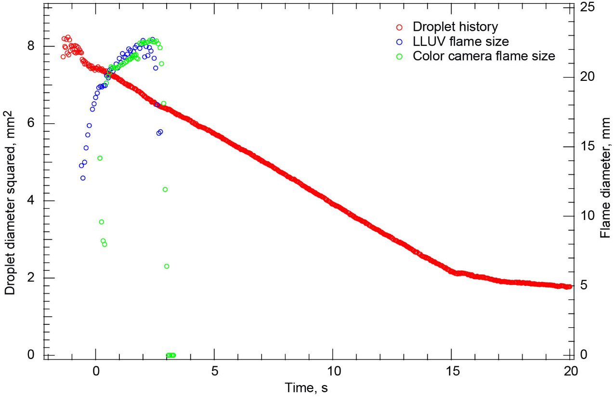

International Space Station · FLEX flight test 155
After the light
One heptane droplet, two measurements. Step through the flight record and see what each instrument could still follow.
- Time on source figure
- —
- Visible flame diameter
- —
- Droplet diameter
- —
Playback gives each selected point equal screen time. Use the printed time for the experiment. If enabled, a lower tone means a smaller measured droplet. The tone is generated here.
Read the investigators’ interpretation
After the visible flame disappeared, the droplet continued to shrink. The FLEX investigators interpreted this unusually rapid vaporization and its eventual plateau as evidence consistent with cool-flame burning and extinction. A dark image alone could not establish that conclusion. NASA Technical Publication, Figure 159
See where the two measurements came from
These points were read from the published figure for run C03H201. The left axis gives droplet diameter squared. We take its square root to draw the diameter. The green color-camera markers use the right axis. A zero marker and the absence of later flame-size points are shown separately.

Image digitization and the sparse selection limit precision. The PSI table separately reports a 2.7 s burn time. It does not identify the time origin of this plotted camera sequence.
| Figure time (s) | Flame (mm) | Droplet (mm²) | Image x (px) |
|---|
Reproduce the digitization · Original figure image · PSI table, row 156 · NASA FLEX dataset